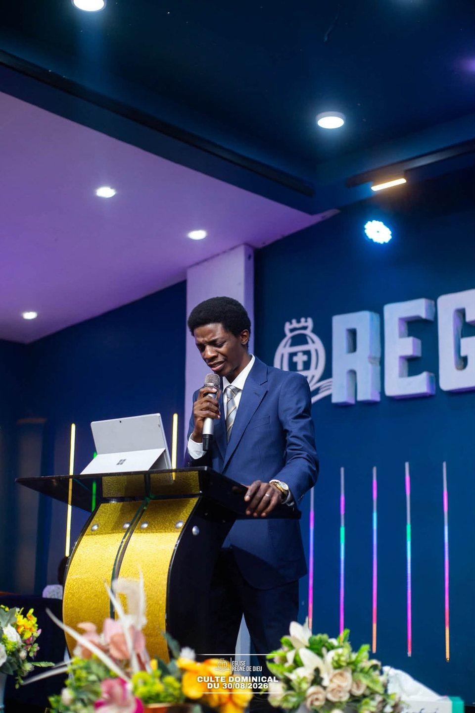
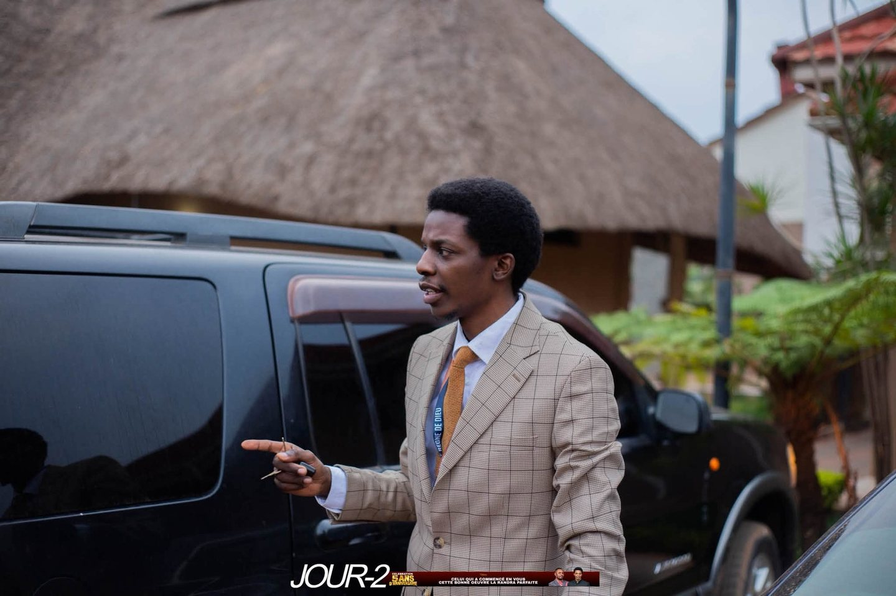
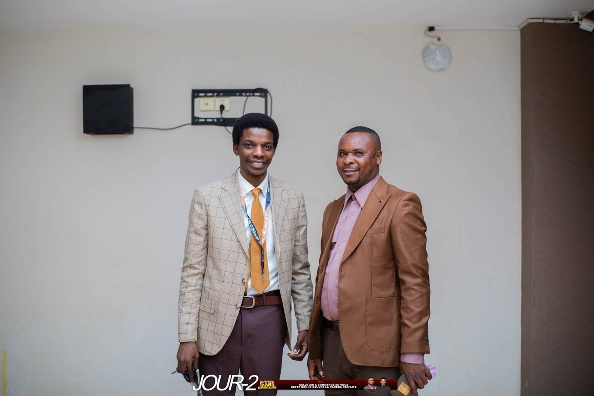
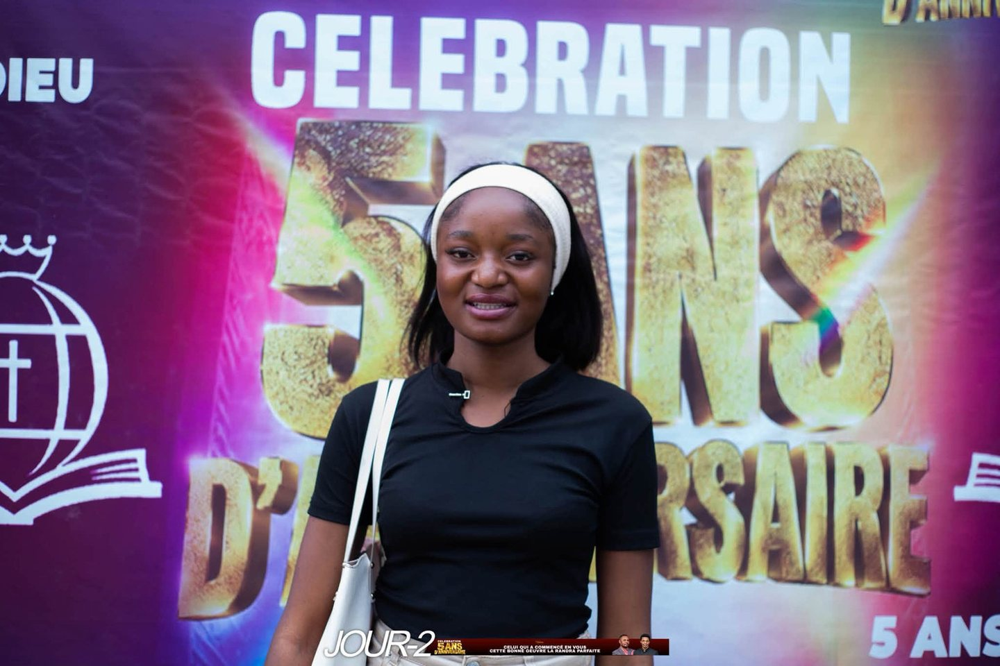

La vie de la communauté
Des instants de foi et de partage
Une sélection de photos issues des publications officielles de l’église, de Mamlakah 2026 aux images récentes de la célébration anniversaire.









Les photos de cette sélection proviennent des publications publiques de la page officielle. Toute nouvelle photo de membre doit être partagée avec son accord.